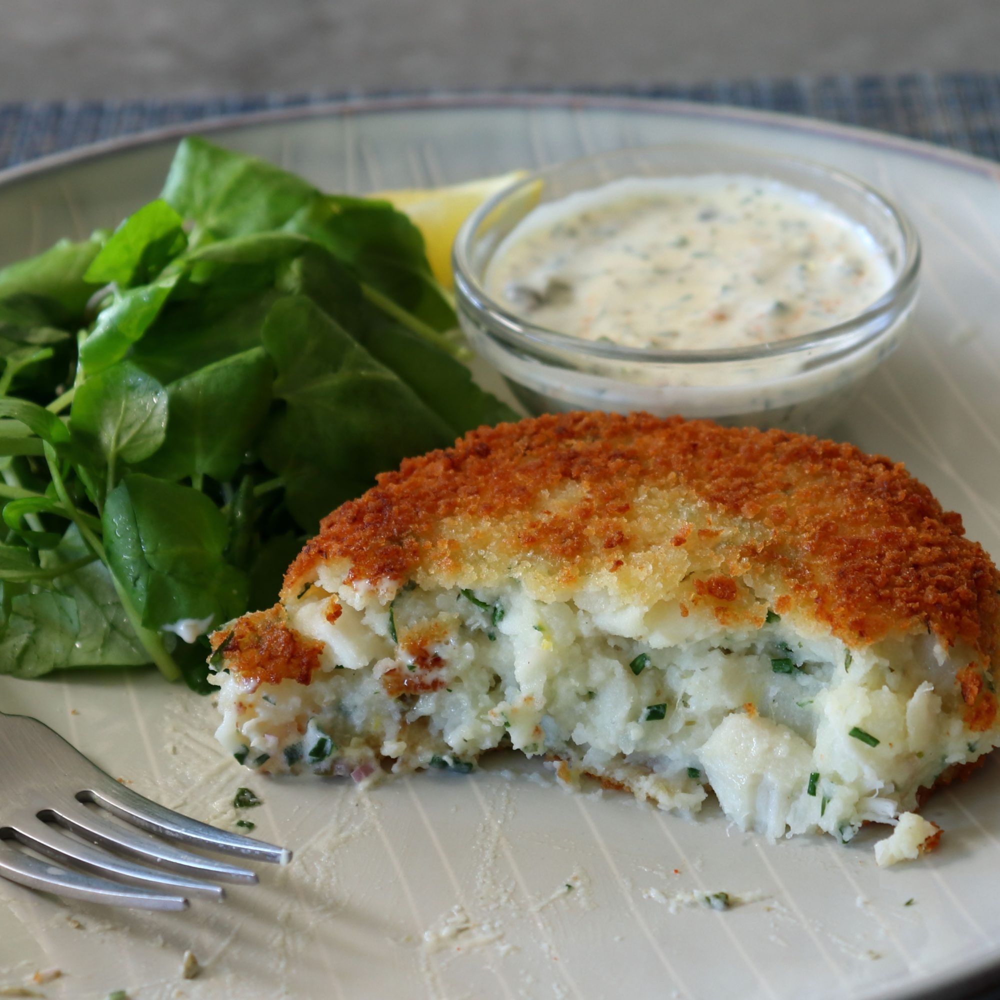

British Fishcakes

Description
A fishcake (sometimes written as fish cake) is a culinary dish consisting of
filleted fish or other seafood minced or ground, mixed with a starchy ingredient,
and fried until golden.
Ingredients
For the Tartar Sauce:
- ½ cup mayonnaise
- 2 tablespoons capers, drained and chopped
- 1 tablespoon finely chopped shallot
- 1 tablespoon finely chopped Italian parsley
- 1 tablespoon finely chopped fresh tarragon
- 2 teaspoons prepared horseradish
- 1 teaspoon Dijon mustard
- 1 pinch cayenne pepper
For the Fish Cakes
- ½ cup milk
- 1 bay leaf
- 1 pound cod, cut into 1-inch pieces
- salt and freshly ground black pepper to taste
- 12 ounces russet potato, peeled and quartered
- 1 pinch cayenne pepper
- 1 tablespoon finely chopped Italian parsley
- 1 tablespoon sliced fresh chives
- 1 teaspoon finely grated lemon zest
For the breading:
- ⅓ cup all-purpose flour
- 1 large egg, beaten
- 1 cup panko bread crumbs, or as needed
- ¼ cup vegetable oil, or as needed
Steps
- Mix mayonnaise, capers, shallot, parsley, tarragon, horseradish, mustard, and cayenne together in a bowl for tartar sauce and refrigerate until needed.
- Add milk and bay leaf to a saucepan and place the pieces of fish over the top. Season with salt. Bring to a simmer over medium heat, and cook for about 1 minute, stirring occasionally. As soon as the fish firms up, but before it starts to flake apart, turn off the heat and cover. Let sit for 5 minutes before draining. Let cool, about 10 minutes. Refrigerate until needed.
- Meanwhile, bring a pot of lightly salted water to a boil. Add russet potato and boil until tender but not falling apart.
- Drain and mash potato in a bowl. Season with salt, black pepper, and cayenne. Add parsley, chives, and lemon zest; add 1 tablespoon tartar sauce mixture. Mix until combined. Flake chilled fish over the top. Mix until combined.
- Scoop out ¼ of the mixture and form into a patty. Repeat with remaining mixture.
- Dust cakes with flour on both sides. Brush both sides of cakes with beaten egg. Coat in bread crumbs.
- Heat oil in a skillet over medium heat. Pan-fry patties in the hot oil until golden brown and heated through, 3 to 4 minutes per side. Drain on paper towels before serving with tartar sauce.
Back